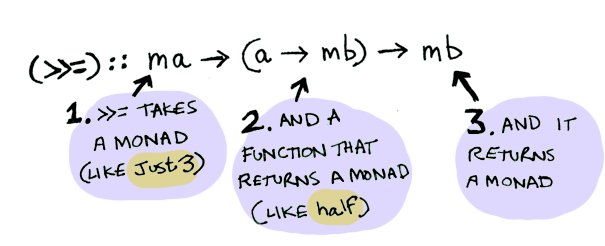

How to Teach Monads in Programming
-- Minutes to Read
So, how does one understand this seemingly impossible to understand topic in programming? If seemingly, no one can explain it to a 5 year old, do we truly understand this intellectual monstrosity?
Google what a monad is, and this is one of the top image results.

>=):: ma → (a→ mb) → mb." />I’m sure that taught you a lot, and now I’m totally sure that you really understand what a monad is…
Well, we could also try by showing you an example of one. Here, take a
look at the
documentation
for Result in Swift!
Still doesn’t make you understand it… Ok, how about we have ChatGPT give us a nice summary! (I’ll even tell it that I’m a 5 year old!)
Okay! Imagine you have a **magic box**. This magic box can hold *one toy* inside.
Now, this isn’t just any box—it’s a **special box**:
1. You can **put** a toy in the box.
2. You can **play** with the toy **inside** the box, but only using special gloves (because it’s a magic toy).
3. If the toy does something special (like turning into a different toy), the box makes sure everything stays safe and magical.
That’s kind of what a **monad** is in programming:
* It’s like a box that **holds a value**.
* You can **do things with the value**, but you have to use special rules to keep everything safe and tidy.
* It **knows how to handle the magic stuff** like errors, waiting, or doing things in order.
So, a monad is a *magical box* that helps programmers **play nicely with tricky things** like missing data, time delays, or big sequences of steps—without breaking the game. 🧙📦✨
Want a grown-up version too?
ChatGPT has introduced concepts like “special box”, “holds a value”, and “handles the magic stuff”… I think you’re probably more confused now…
Good Teaching and Good Learning are Experiential
This is one of my personal laws of design, and the core idea is that we learn best through using all of our human senses (not just hearing and eyesight). Good education is not just about transferring information from point A to point B, because good education forces you to accept a style of action into your lifestyle rather than focusing on concept retention.
Therefore, all existing online resources (including this article) will never be able to teach you what a monad is in programming. Simply put, only reading articles, looking at fancy diagrams, or looking at code is not making you adopt the style of thinking that enables you to use monads to their fullest potential.
You’re failing to learn monads because you’re stuck trying to “learn monads”!
Pain is the Only Way to Learn Monads
You’re going to learn monads through physical and mental pain. Yes, you will experience pain over and over again as you write that same repetitive and absolutely annoying code. In fact, you’re not even going to be writing monads when you experience this pain, and you don’t need to understand them to feel the pain. Eventually, this will become so painful that monads will become the natural cure for that pain.
I can show you examples (in words and code) that describes the information of this pain. However, you will only be enlightened once you feel that pain yourself.
Arrays
You’ve probably written code like this before.
let array = [1, 2, 3]
var doubled = [Int]()
for num in array {
doubled.append(num * 2)
}
Now do this for every single time you want to iterate over an array in
your application. This is painful. You don’t want to write
for element in array every single freaking time, and then
either call array.append or filter through an if
statement every single time.
let array = [1, 2, 3, 4]
var tripled = [Int]()
for num in array {
tripled.append(num * 3)
}
var even = [Int]()
for num in tripled {
guard num.isMultiple(of: 2) else { continue }
even.append(num)
}
var stringified = [String]()
for num in even {
stringified.append(String(num))
}
var joined = ""
for str in stringified {
joined += "\(str), "
}
print(joined) // "6, 12, "
Reading this code is painful. Writing it was also painful. Good, now let’s have monads cure our pain!
let str = [1, 2, 3, 4]
.map { $0 * 3 }
.filter { $0.isMultiple(of: 2) }
.map(String.init)
.joined(separator: ", ")
Much more compact, much less painful. In this case, “the magic stuff” (according to the ChatGPT explanation) is the iteration. You no longer have to worry about the iteration, and instead you specify what the iteration means.
Result
You’re probably familiar with try catch (Swift uses
do catch instead) for error handling. Sometimes, that can
be annoying such as when you want to store an Error in a
struct like so. (An example of where you would want to store an error
in a struct would be if you wanted to render an error message in your
UI.)
// ❌ Bad
struct MyData {
let error: (any Error)?
let value: String
}
// ✅ Good
struct MyData {
let result: Result<String, any Error>
}
So now let’s say we’ve got a function that throws, and returns a
Result that doesn’t contain a String.
func someWork() -> Result<UUID, any Error> {
// ...
}
We need to pass a Result<String, any Error> to
MyData. So we’ll need to transform this result.
func transform() -> MyData {
switch someWork() {
case .success(let uuid):
MyData(result: .success(uuid.uuidString))
case .failure(let error):
MyData(result: .failure(error))
}
}
This is painful code to write. I don’t want to think about the failure case, instead I merely only care about the success case. So let’s turn to monads to cure our pain.
func transform() -> MyData {
MyData(result: someWork().map(\.uuidString))
}
Nice! However, what if instead of a uuid string, we treated the
UUID as a user identifier of some kind, and then we
wanted to look up the user name for that identifier. If the user
doesn’t exist, we’ll return a failure result.
func username(for id: UUID) -> Result<String, any Error> {
// Return success if user with id exists, else failure...
}
func transform() -> MyData {
// ❌ Won't compile because map returns Result<Result<String, any Error>, any Error>
MyData(result: someWork().map { username(for: $0) })
}
func compilingTransform() -> MyData {
// Back to switch...
switch someWork() {
case .success(let uuid):
switch username(for: uuid) {
case .success(let name):
MyData(result: .success(name))
case .failure(let error):
MyData(result: .failure(error))
}
case .failure(let error):
MyData(result: .failure(error))
}
}
Again, this is painful because we have to think about the failure and success cases twice! My primary concern here is translating the UUID into a username, so let’s turn to monads to cure our pain.
func transform() -> MyData {
MyData(result: someWork().flatMap { username(for: $0) })
}
In this case, “the magic stuff” (according to the ChatGPT explanation) is the handling the result for an operation. You don’t need to worry about the result handling, and instead you specify what the result handling means.
Pain Gives Meaning to Monads
You still don’t understand monads from those examples. You won’t until you feel the pain, the least I can do is show you what that pain feels like, such that you can anticipate it. Pain is a method of learning.
Monads are actually an incredibly simple idea, just like this glass.
Yet how do you "learn a glass"? What does that even mean?
A glass can do many things, it can hold liquid, dirt, toys, cash, coins, etc. It can be used to cover or trap something by acting as a surface. It’s also transparent, so we can see and learn from the internals of what it holds.
Try drinking water without a glass or some other object. You’ll find this is painful, and you’ll use the glass as a cure. The pain gives meaning to the glass.
Since the glass is so simple, we don’t derive meaning from it, we imbue it with meaning instead. Pouring different liquids give the glass a different meaning in a certain context. All of these meanings combined is what gives us an understanding of what a glass is.
Understanding monads in programming has nothing to do with functors. endofunctors, or mathematical functions. Those terms do not describe the systems you’re building because they describe mathematics. You describe the systems you’re building with the artifacts at your disposal, and monads are an artifact to augment your ability to do so.
So, to end this particular discussion.
Don’t find meaning in Monads, give Monads your meaning.
— 7/17/25